NOTE: Padding and border widths add to additional width and height and set the overall dimension in the content box
Box Model: Content-Box
Many properties in CSS have a default value and don’t have to be explicitly set in the stylesheet.
For example, the default font-weight of text is normal, but this property-value pair is not typically specified in a stylesheet.
The same can be said about the box model that browsers assume. In CSS, the box-sizing property controls the type of box model the browser should use when interpreting a web page.
The default value of this property is content-box. This is the same box model that is affected by border thickness and padding.
Instructions
Study the diagram to the right. It illustrates the default box model used by the browser, content-box. When you’re done, continue to the next exercise.
